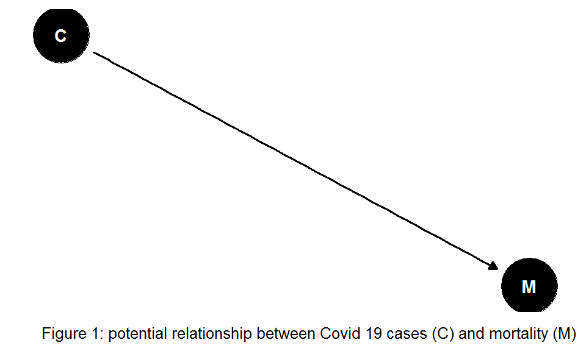
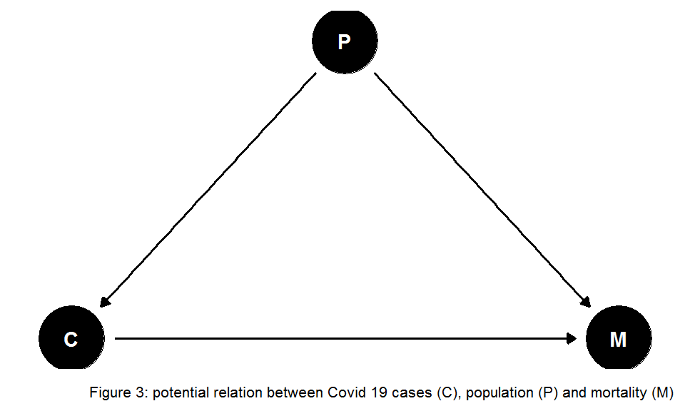
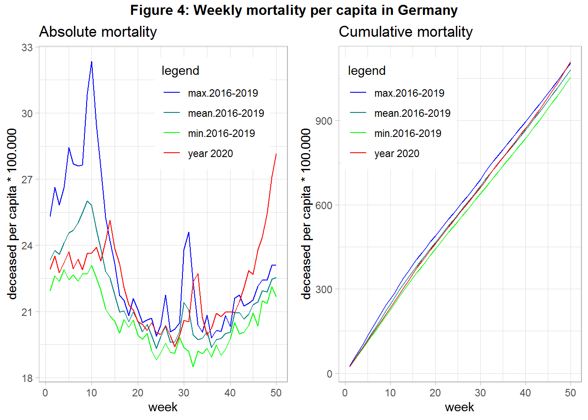

Germany: Mortality in times of Covid-19
25 11 2020, Version 2 on 14 02 2021
Introduction
Since this year mankind has to deal with the communicable disease Covid 19. People across many countries and societies as a whole are affected from both an epidemiological and economic point of view. Data on mortality is published across media, also to justify rigorous policy interventions. However, the numbers are rarely well explained. Hence, we close this gap by using public data from official statistics in order to visualize the mortality in Germany across time, also accounting for changes in the population over time.
Absolute Mortality
Figure 1 shows a simple relationship of total Covid 19 (C) and mortality (M) cases. If such a dependency holds then a simple comparison between then mortality in year 2020 with the preceding years may reveal the effect of Covid 19.

Figure 2 shows the mortality up to week 46 for year 2020 in contrast to the mean, minimum, and maximum mortality of the 4 preceding years.
#read data
#source: https://www-genesis.destatis.de/
pop <- read_csv("Bevoelkerung_destatis.csv")
#source: https://www.destatis.de/DE/Themen/Gesellschaft-Umwelt/Bevoelkerung/Sterbefaelle-Lebenserwartung/Tabellen/sonderauswertung-sterbefaelle.html?nn=209016
deaths <- read_csv2("Sterbefaelle_Bundesland_destatis.csv")
pop_tab <- pop %>%
gather(`31.12.2015`, `31.12.2016`,`31.12.2017`,`31.12.2018`,`31.12.2019`,
key="end_of_year", value=population) %>%
mutate(Year=as.integer(substr(end_of_year,7,10))+1)
deaths_tab <- deaths %>%
select(-Insgesamt) %>%
gather(`01.01.`:`20.12.`,
key=day_month, value=deaths) %>%
mutate(day=dmy(paste0(day_month, Jahr)), deaths=as.integer(deaths)) %>%
select(`Nr.`, Jahr, Bundesland, day_month, deaths, day) %>%
filter(!is.na(deaths)) #29th February
#bring population with mortality together on regional level.
pop_death <- deaths_tab %>%
group_by(Jahr, Bundesland) %>%
summarise(Tage=n(), deaths=sum(deaths)) %>%
inner_join(pop_tab, by=c("Jahr"="Year", "Bundesland"="Bundesland")) %>%
select(Bundesland, Jahr, deaths, population)
#aggregate on year-level:
data_year <- pop_death %>%
group_by(Jahr) %>%
summarise(n=n(), death_tot=sum(deaths), pop_tot=sum(population)) %>%
mutate(death_rel=death_tot/pop_tot*1000)
#plot 1 absolute and 2 relative mortality (per capita)
#1 plot absolute and cumulative values over time
##aggregate on weekly level
#then compare 2020 with mean, min, max in the same week in the years before 2020
pop_year <- pop_death %>%
group_by(Jahr) %>%
summarise(n=n(), population=sum(population))
pop_death_time <- deaths_tab %>%
group_by(Jahr, week=week(day)) %>%
summarise(Regionen=n_distinct(Bundesland), deaths=sum(deaths), days_in_week=n_distinct(day)) %>%
filter(days_in_week==7) %>%
group_by(Jahr) %>%
arrange(week) %>%
mutate(deaths_cum=cumsum(deaths)) %>%
arrange(Jahr, week) %>%
inner_join(pop_year, by="Jahr") %>% ##add population data
mutate(deaths_rel=deaths/population, deaths_cum_rel=deaths_cum/population)
pop_death_time_2020 <- pop_death_time %>%
filter(Jahr==2020)
pop_death_time_base <- pop_death_time %>%
filter(Jahr<2020) %>%
group_by(week) %>%
summarise(mean_deaths=mean(deaths), min_deaths=min(deaths), max_deaths=max(deaths), mean_deaths_cum=mean(deaths_cum), min_deaths_cum=min(deaths_cum), max_deaths_cum=max(deaths_cum), mean_deaths_rel=mean(deaths_rel), min_deaths_rel=min(deaths_rel), max_deaths_rel=max(deaths_rel) , mean_deaths_cum_rel=mean(deaths_cum_rel), min_deaths_cum_rel=min(deaths_cum_rel), max_deaths_cum_rel=max(deaths_cum_rel))
#plot total values over time:
pop_death_time_comp <- pop_death_time_2020 %>%
inner_join(pop_death_time_base, by="week") %>%
gather(`deaths`, `min_deaths`, `max_deaths`, `mean_deaths`,
key="compare", value="deceased") %>%
mutate(legend=ifelse(compare=="deaths", "year 2020"
, ifelse(compare=="min_deaths", "min.2016-2019"
, ifelse(compare=="max_deaths", "max.2016-2019"
, "mean.2016-2019"))))
b2g <- blue2green(3)
col <- c("year 2020"="red", "max.2016-2019"=b2g[1], "mean.2016-2019"=b2g[2], "min.2016-2019"=b2g[3])
#plot absolute mortality
p1 <- ggplot(pop_death_time_comp, aes(x=week, y=deceased/1000, group=legend, color=legend)) +
geom_line() +
scale_color_manual(values=col) +
labs(title = "Absolute mortality") +
theme(legend.position = c(0.7, 0.8))
#repeat for cumulative values
pop_death_time_comp_cum <- pop_death_time_2020 %>%
inner_join(pop_death_time_base, by="week") %>%
gather(`deaths_cum`, `min_deaths_cum`, `max_deaths_cum`, `mean_deaths_cum`,
key="compare", value="deceased") %>%
mutate(legend=ifelse(compare=="deaths_cum", "year 2020"
, ifelse(compare=="min_deaths_cum", "min.2016-2019"
, ifelse(compare=="max_deaths_cum", "max.2016-2019"
, "mean.2016-2019"))))
#plot cumulative mortality
p2 <- ggplot(pop_death_time_comp_cum, aes(x=week, y=deceased/1000, group=legend, color=legend)) +
geom_line() +
scale_color_manual(values=col) +
labs(title = "Cumulative mortality") +
theme(legend.position = c(0.25, 0.8))
#combine 2 plots next to each other
title1=textGrob("Figure 2:Weekly mortality in Germany", gp=gpar(fontface="bold"))
grid.arrange(p1, p2, ncol=2, top=title1)
When interpreting this figure we have to acknowledge that in 2018 there was a very high mortality due to a very severe influenza season in the first quarter. We see for 2020 three peaks of relatively high mortality in week 15, around week 32, and from week 42 onward. The first and the last peak was correlated with strong policy interventions (“lockdown”). We also see that the cumulative mortality in 2020 was relatively high, striving towards the maximum mortality of year 2018, which was used to justify the interventions.
Mortality per capita
However these total number can provide wrong evidence about the mortality, if the population changes between the years: If the population number (P) increases we would expect that more people die (see Figure 3), also in absence of Covid-19.

Hence, we have to account for population changes. Figure 4 shows the data from above but uses the population of the beginning of each year in order to calculate number of deceased per capita.
#2 Calculate Mortality per capita (population at the beginning of year):
pop_death_time_comp_rel <- pop_death_time_2020 %>%
inner_join(pop_death_time_base, by="week") %>%
gather(`deaths_rel`, `min_deaths_rel`, `max_deaths_rel`, `mean_deaths_rel`,
key="compare", value="deceased") %>%
mutate(legend=ifelse(compare=="deaths_rel", "year 2020"
, ifelse(compare=="min_deaths_rel", "min.2016-2019"
, ifelse(compare=="max_deaths_rel", "max.2016-2019"
, "mean.2016-2019"))))
b2g <- blue2green(3)
col <- c("year 2020"="red", "max.2016-2019"=b2g[1], "mean.2016-2019"=b2g[2], "min.2016-2019"=b2g[3])
#plot absolute mortality
p3 <- ggplot(pop_death_time_comp_rel, aes(x=week, y=deceased*100000, group=legend, color=legend)) +
geom_line() +
scale_color_manual(values=col) +
labs(title = "Absolute mortality", y="deceased per capita * 100.000") +
theme(legend.position = c(0.7, 0.8))
#repeat for cumulative values
pop_death_time_comp_cum_rel <- pop_death_time_2020 %>%
inner_join(pop_death_time_base, by="week") %>%
gather(`deaths_cum_rel`, `min_deaths_cum_rel`, `max_deaths_cum_rel`, `mean_deaths_cum_rel`,
key="compare", value="deceased") %>%
mutate(legend=ifelse(compare=="deaths_cum_rel", "year 2020"
, ifelse(compare=="min_deaths_cum_rel", "min.2016-2019"
, ifelse(compare=="max_deaths_cum_rel", "max.2016-2019"
, "mean.2016-2019"))))
#plot cumulative mortality
p4 <- ggplot(pop_death_time_comp_cum_rel, aes(x=week, y=deceased*100000, group=legend, color=legend)) +
geom_line() +
scale_color_manual(values=col) +
labs(title = "Cumulative mortality", y="deceased per capita * 100.000") +
theme(legend.position = c(0.25, 0.8))
#combine 2 plots next to each other
title2=textGrob("Figure 4: Weekly mortality per capita in Germany" , gp=gpar(fontface="bold"))
grid.arrange(p3, p4, ncol=2, top=title2)
We find that changes of the number of citizens did not alter the found pattern from above. In the end of 2020 overall mortality increased strongly, probably driven by Covid-19. However, other potential relevant variables are not included into to the analysis. If the relationship between Covid-19 cases and mortality is confounded be the important variable age (see Figure 5) weed need to account for changes in the age structure over the years in our analysis.
After accounting for changes in the age structure for example Ragnitz (2021) did not find any increased mortality for the year 2020 in Germany. However, the author argued that this was due to an decreased mortality during 2020 summer.
If you check https://kieranhealy.org/blog/archives/2020/12/18/cross-national-death-rates/ you’ll see that other countries were more severely hit by covid-19 associated mortality. It would be interesting to see the impact of covid-19 on mortality if important confounders are taken into account, also from an international perspective.
Take care. :)
References
Ragnitz, Joachim. 2021. “Hat die Corona-Pandemie zu einer Übersterblichkeit in Deutschland geführt?” Ifo Institut.